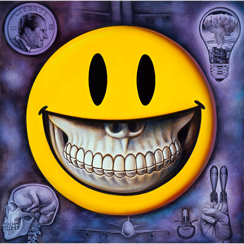

Exhibitions
Green Day Presents: The Art of Rock, StolenSpace Gallery (Dray Walk, Old Truman Brewery), London, UK, October 23–November 1, 2009.
Literature
Ron English, Status Factory: The Art of Ron English (San Francisco: Last Gasp of San Francisco, 2014), p. 7. ISBN 978-0867197891.
Notes
The work is documented in RJ Rushmore, “Green Day and The Art of Rock,” Vandalog, October 24, 2009, available here, accessed April 18, 2026.
It is also recorded in “20 years ago... "Dookie" by Green Day,” Music on Walls, February 1, 2014, available here, accessed April 18, 2026.
Ancillary Documentation